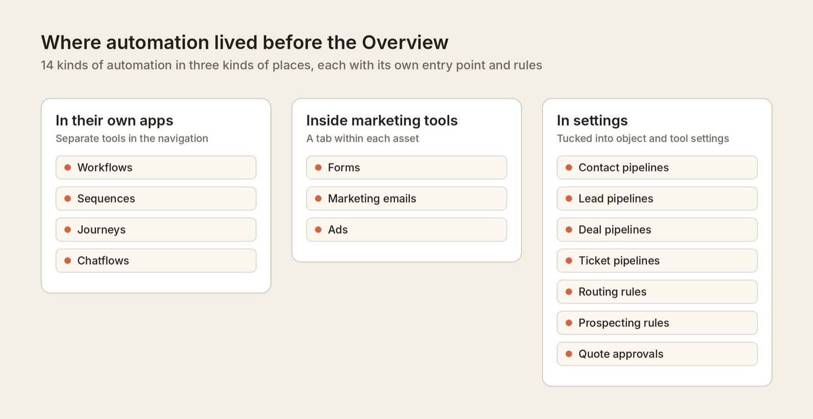
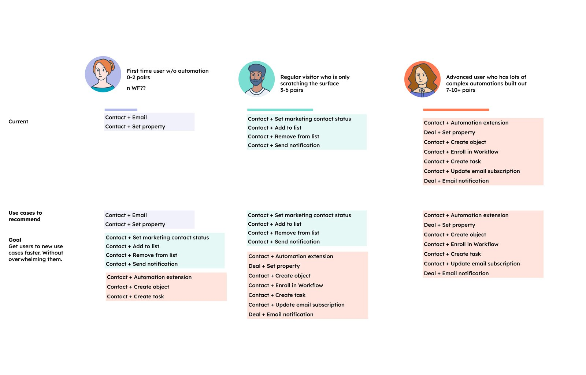
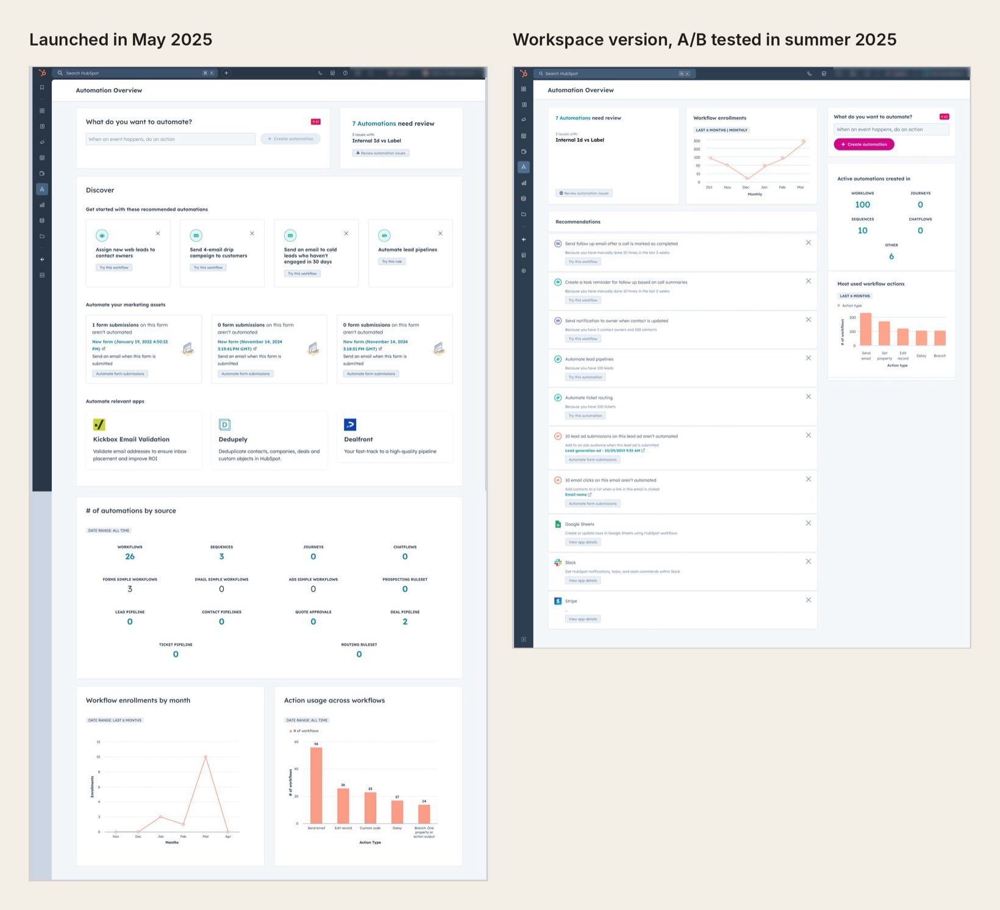
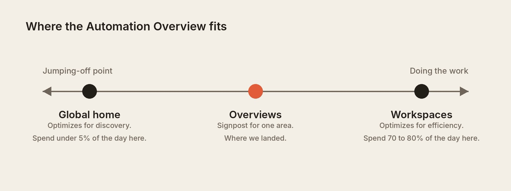
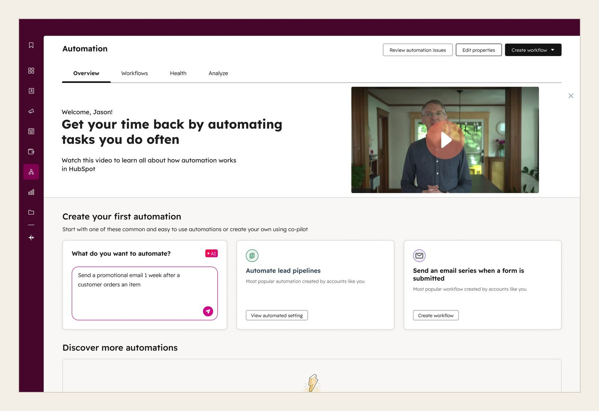

My role
I led design for the Automation Overview and co-led defining the vision with my PM. I worked with front-end and back-end engineers to build and ship it.
I owned the experience end to end, from early concepts and prototypes to final designs, across the Pro and Enterprise page, its redesign, the first-run experience for new accounts, and the Starter version. I also planned and ran the research that shaped each version, and tracked how the page performed after launch so we could decide what to change next.
I started on the project in August 2024. The Overview went to a private beta in March 2025 and launched to all Pro and Enterprise customers in May 2025. My work ended with the Starter version, which reached every Starter account in January 2026.
01 · Context
Customers had more automation tools than they knew how to use
HubSpot's automation had grown from workflows into a whole set of tools, from sequences and chatbots to simple workflows inside forms and rules tucked into pipeline settings. HubSpot measured success by how many different jobs a customer automates, like updating a deal stage or emailing a new lead.
Only 31% of customers using automation had automated ten or more jobs. More than half had automated six or fewer, and it took about five months to reach ten. These were Pro and Enterprise customers, with access to the most automation tools, and only a fraction of them were getting the most value. We set out to understand why and what we could do about it.
02 · Problem
Customers didn't know which tool to use or where to start
Each new tool was meant to save customers time, but together they made automation harder to use. Customers had so many options that they didn't know which tool fit which job, like choosing between a sequence and a workflow. Many ended up automating very little, or nothing at all.

Customers said they "spend a lot of time going from tool to tool, or don't know you even offer solutions to my problems." Others couldn't tell whether their automation was working, and some avoided it altogether.
"People were put off actually doing anything, because it was just too scary to go in there and sort it out yourself."
Customer, automation research
That held customers back. They weren't saving the time HubSpot could save them, so they got less return on what they paid. And our data showed that the more jobs a company automated, the more of its revenue HubSpot kept over time.
03 · Strategy
We set out to build one home for automation where everything leads to an action
My PM and I wrote the brief in August 2024 and ran a brainstorm with our engineers. Our goal was one home for automation, where customers could find tools and use cases they didn't know about and get started with little effort.
We set one firm rule. HubSpot had tried a similar home page before, and it failed because it became another reporting dashboard. So every part of the Overview had to lead to an action. A recommendation opens a ready-made automation, and the AI prompt drafts a workflow for the customer to review. To decide what to recommend, we mapped which jobs customers automate at each stage. Recommendations could then suggest the next jobs for each stage, without overwhelming people who were just starting.

04 · Concept validation
Customers wanted to fix what they had before building something new
Our first concept was one long page with everything from our brainstorm: an AI prompt, recommended automations, marketing assets and apps to automate, ways to improve existing automations, issues to review, and reporting. I walked four customers through it to hear their first impressions.
I also asked what they'd expect from a page called Overview compared to one called Workspace. HubSpot already had a few pages that felt similar, but no shared framework defined what each kind of page should be, so the name mattered. Customers expected an overview to coach them and a workspace to be where they'd build.
The page itself had problems. People had to scroll too far, and anything below the first few sections risked being ignored. What they valued most was seeing issues and ways to improve the automations they already had, so the next version needed to bring those up the page.
"Everything under here is going to be ignored."
Customer, concept test 1
05 · Design direction
Customers preferred a workspace, but the A/B test and the UX framework pointed to an overview
So I designed a second concept in a compact, workspace style, with issues, a performance scorecard and recommendations at the top. I tested it against the first concept with 10 customers at every experience level, and they preferred the compact version. They called it "intuitive" and "a place to come back to." The first concept felt "cluttered" and "heavy."
"This is much more useful to me than what I currently see."
Customer, concept test 2
Beta customers were getting value from the first concept, but they found it hard to navigate, and advanced customers saw little in it for them. Interviews could only tell us so much, so we launched the first concept to all Pro and Enterprise customers on May 12, 2025, and built the workspace version to A/B test against it.

At the same time, HubSpot's UX group was defining a framework for what each kind of page should be. A global home is a jumping-off point, and a workspace is where people spend most of their day doing work. An overview sits in between, as a signpost for one area of the product. Our workspace version stretched past that definition.

The framework hadn't been tested with customers, so we wanted our own data before following it. From June 30 to July 14, 2025, we ran the A/B test. The results were nearly identical across activation, interaction and retention, so the team kept the overview model.
The test still taught us something. In the launched page, the AI prompt came first and got the most use. In the workspace version, issues came first and usage shifted to issues. Whatever we put at the top got used.
After launch, we turned our attention to new accounts. Nearly half of new customers weren't getting any value from automation in their first month, and for an account with no automations, the Overview was mostly empty charts. I ran another round of research to find which zero state would get people started fastest: unmoderated click tests of three versions, with about seven people each. In every version, the AI prompt was the most common place to start. After the click tests, we combined the best of each version into one design and released it to customers.
06 · Final design
Each part of the page answers something we heard from customers
With the overview model settled, we focused on two things: getting people to the page, and making it clear what each part was for.
The Overview originally lived on its own page, which meant fewer people visited it. So we moved it into a tab alongside Workflows to make it easier to find and understand. We then organized the page around four jobs: orient, discover, monitor and learn.
Customers can describe what they want to automate and get a drafted workflow to review, or start from a suggestion based on their account's activity. They can see which automations need attention, pick up where they left off, and turn on recommended automations that explain why they fit the account. Reporting stays short and links to the automations behind each number, so the page stays focused on what to do next. People who want to go further can find apps to connect and short Academy videos.
Accounts with no automations get a guided start instead, built around the AI prompt, since it was the most common place to start in every version we tested.

In November 2025, as part of a company-wide push to improve product quality, we brought the Overview to Starter. Automation came up in about a third of Starter churn calls, often about features Starter already had. So I built the Starter version around the automation those customers already have, instead of the Workflows tool they don't, and kept reporting to a simple count, since they can't drill into reports. It launched to every Starter account in January 2026 without testing first, and we learned from live usage.
07 · Impact
More customers found the Overview, and it helped them get automation running
Customers had been automating very little because they didn't know where to start. After launch, monthly visits to the Overview grew from about 52,000 to 150,000 a year later.
- The page passed 2 million views by October 2026.
- 31.7% of visitors came back within 7 days.
- 26% of the 22,021 people who described an automation in the AI prompt turned on the workflow it drafted.
On Starter, about 1 in 3 visitors interact with the page, more than on Pro.
Our main goal was to help customers automate more jobs. Several launches landed close together, so we couldn't isolate the Overview's effect on that number, but we did see clear signs in the steps leading up to it. New accounts that used the Overview turned on automations twice as often in their first month as older accounts, and the AI prompt gave customers a reliable way to get a workflow running. We believe this helped customers automate more jobs than before, or get there faster.
Reflection
What I'd do differently
A page like the Overview gets every kind of visitor, and the risk was always that it would try to serve all of them and end up as a catch-all with no clear starting point. New accounts were looking for something to turn on, while established accounts cared more about how their existing automations were running.
We did a lot of concept testing early on, but I'd have kept gathering feedback after launch to see how people used the page over time.
Recommendations were the hardest part. Our goal was to get customers automating more jobs, but the system behind them couldn't vary or personalize recommendations enough to get there. This was before we could use LLMs in our infrastructure to generate personalized recommendations.